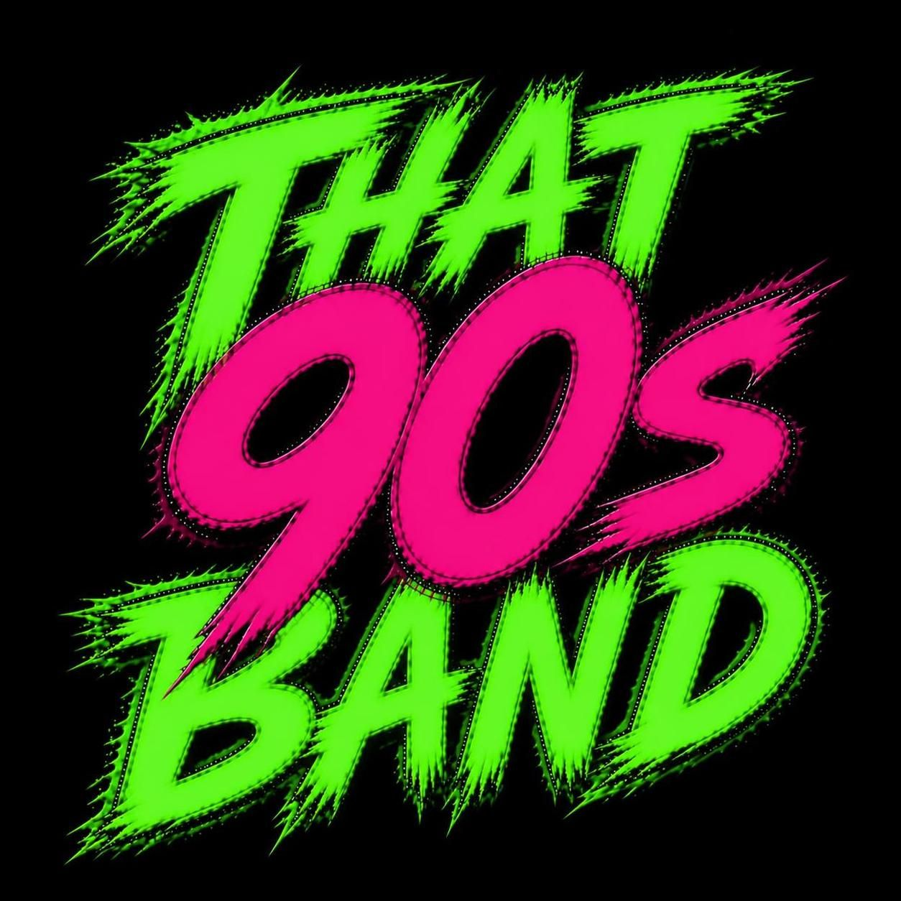
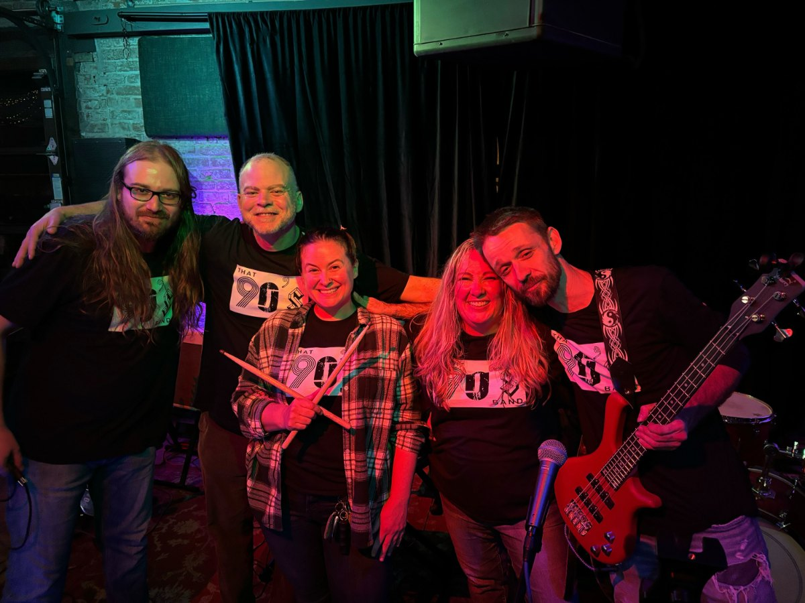
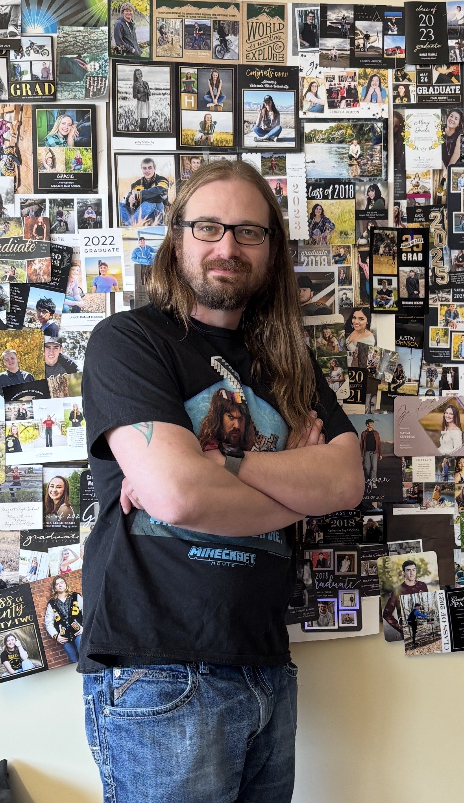
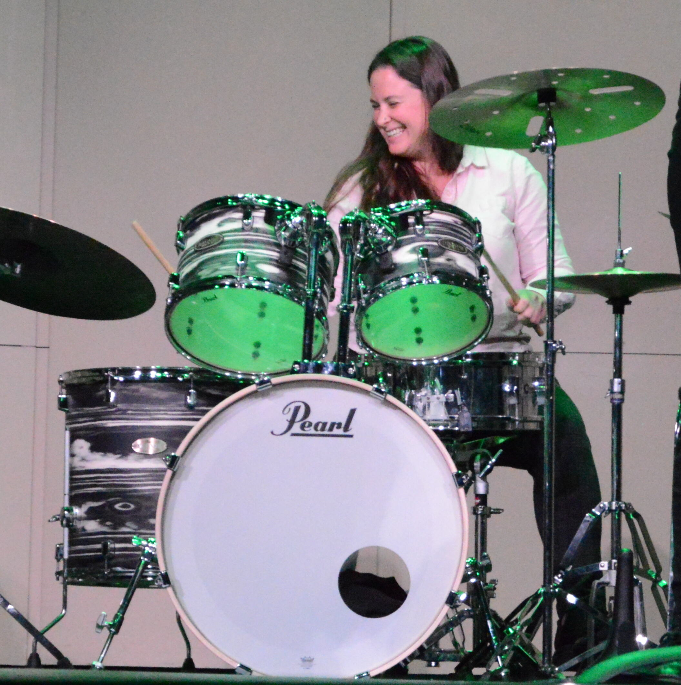
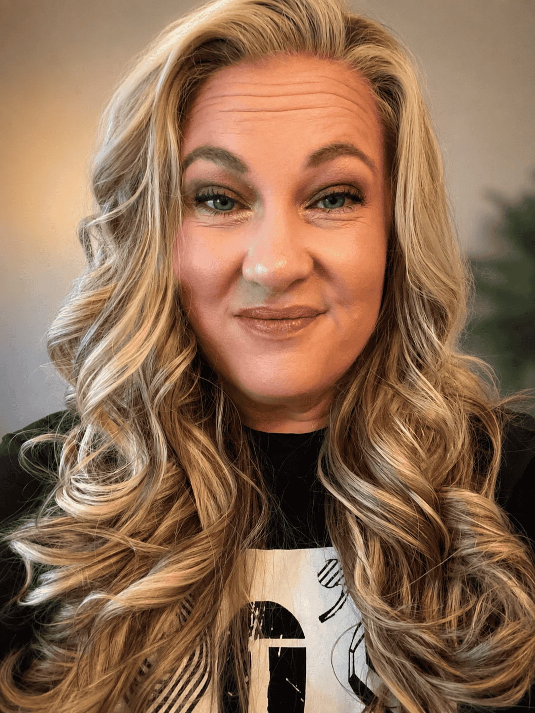

Authentic. Energetic. Unforgettable.

Experience the music, energy, and nostalgia that defined a generation

Guitar
Rafe Paulson was raised on a farm in southern Colorado. The son of a farmer and a teacher, he grew up outdoors and in the classroom. His natural affinity for numbers led him to pursue science, eventually earning a Bachelor of Science in Physics. Rafe is a husband, father, and high school teacher who has taught advanced science and mathematics for over a decade. He enjoys making complex ideas approachable and often brings music into the classroom. A guitarist for more than 20 years, he has performed with multiple bands spanning country, blues, jazz, grunge, and rock. When he isn't teaching or playing music, Rafe enjoys spending time with family and friends, reading, and playing tabletop games like Dungeons & Dragons.
Bass
Monte has been making music his whole life, inspired early on by his dad, a blues guitarist who performed with various bands and taught him how to play guitar. He got his first guitar at age 11 and was hooked from then on, spending his teens in the 1990s and his twenties playing in punk rock bands. In his 30s, he went back to school for music, earning a bachelor’s degree in music performance and a master’s degree in music education. Today, Monte enjoys being a elementary school music teacher and still holds true to his punk rock roots.
Keyboard
Originally from Long Island, New York, Matthew has been playing in bands since the mid 90s in Ohio and Colorado, having played with the bands Eclipse, Case of Culler, the Bent Ears, Old Mose, Tripping Stairs, and songwriter Steve McClain among others. Matthew’s favorite 90s bands are Toad the Wet Sprocket, Grant Lee Buffalo, Marillion, and Radiohead, and he loves playing his favorite 90s songs with That 90s Band. Matthew teaches Music Theory, Composition, and Technology at Adams State University and has also taught at Kent State University, Hiram College, and the University of Akron. Matthew’s album This Little Light (2016) was released on Heart Dance Records and has been featured on radio stations in ten countries and top contemporary instrumental music charts. His music has been used in various animations and advertisements on youtube, including animations for Five Nights at Freddy’s, and has been heard in several films and theater productions, including the documentary A Shared Space. Matthew also performed piano on two PBS documentary soundtracks by songwriter Don Richmond and his compositions have been performed at various conferences and festivals.

Drums
Melinda Leoce has been playing drums, in some shape or form, since 1997. In addition to drum set, which she picked up from her Dad, she marched in many competitive drumlines throughout her high school and college years, leading her to major in music. Melinda has her Bachelors, Masters, and Doctorate in Percussion Performance. She is currently Assistant Professor of Percussion at Adams State University. While she performs and teaches many aspects of percussion, Melinda always enjoys coming back to the drum set. In addition to drum set, Melinda enjoys singing both back up and lead vocals. She has been the drum set player and vocalist for multiple successful party bands in Florida, Indiana, and Colorado. When she is not drumming and teaching, Melinda enjoys reading, skiing, and volunteering at the local animal shelter.

Vocals
Ashlee is a proud Colorado native, mom of four, and lifelong singer who has shared her voice at community events, church meetings, weddings, and funerals before living her dream as the lead vocalist of That 90’s Band. She loves the energy, nostalgia, and connection that come from performing the music we all grew up with. Her goal is simple: to help people forget about life for a while, sing along, dance, and leave with a smile. When she’s not on stage, she’s spending time with her four kids, getting involved in her community, and creating opportunities to bring people together wherever she can.
Experience the live energy and passion of That 90's Band
A massive dose of 90s nostalgia. Scroll through our active song catalog!
Your chance to experience the ultimate 90s throwback show in Colorado & New Mexico
7:00 PM
Join That 90's Band for an unforgettable night of live 90s hits and pure nostalgia in the heart of Salida, Colorado.
Perfect for groups, dates, and band enthusiasts
6:00–9:00 PM
Catch us live under the stars for an awesome evening of 90s tracks in Del Norte.
Outdoor venue | Drinks & Dining available
1:30 PM
Cole Park
Celebrate the spirit of Alamosa Oktoberfest festival with authentic live 90s rock and pop entertainment.
Family-friendly | Community celebration
8:00 PM
Halloween Bash! Costumes, covers, and loud guitars. Let's party like it's 1999.
Halloween Party | Costumes encouraged!
Ready to bring the live music energy of the 90s to your venue or event? Reach out today!
Email Us Directly:
that90sbandalamosa@gmail.comInclude your event date, location, and any specific requests.